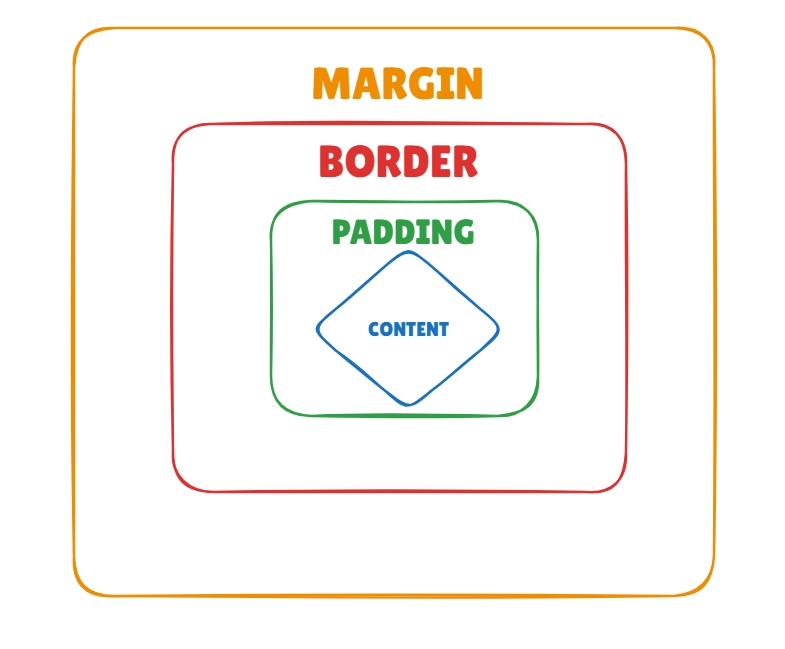

Intro to the Box Model
Explain the four box model layers (content, padding, border, margin) and their stacking order.

- Content
- Padding
- Border
- Margin
Content
Content is where the inner text and images are placed.
Padding
Padding is the space between the content and its border.
Border
Borders surround the whole content and padding element. Borders can be identified by color, width and decoration style.
Margin
Margin is the space surrounding and seperating each element.